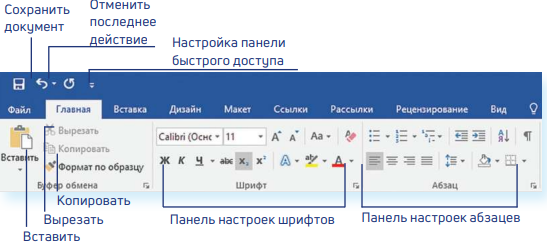
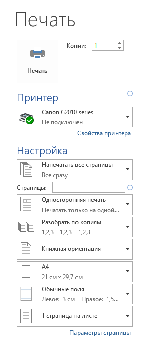

ГЛАВА 3 «Работа с текстом»
На компьютере можно написать и напечатать текст. Для вывода текста
на бумагу вам понадобится специальное устройство – принтер.
Создавать текст, оформлять его помогают специальные программы-редакторы. Их необходимо установить на компьютер.
Например, скачать бесплатно из интернета OpenOffice Writer или купить Microsoft Word в специализированном магазине.
Чтобы запустить программу Word, необходимо дважды кликнуть на значок программы на Рабочем столе либо найти значок программы в меню «Пуск».
Для запуска любой программы необходимо время. Будьте терпеливы!
Работа в текстовом редакторе Word
После открытия программы перед вами будет чистый лист, вы сразу же можете вводить текст при помощи клавиатуры.
Редактировать и форматировать текст можно позже.
Над белым листом – кнопки (меню), которые помогут работать с текстом.
Они могут различаться в разных версиях программы, но основные остаются неизменными.
Опреде ленные значки означают возможность конкретных действий :
Ножницы – вырезать
принтер – печать
синий квадратик-дискета – сохранить.

Вверху панели есть надписи: «Главная», «Вставка», «Ссылки», «Рецензирование».
Это разделы, которые пригодятся вам при редактировании и наборе текста. Каждая объединяет группу различных команд.
Кликнув на кнопку «Главная», вы увидите, какие у вас есть основные возможности при работе с текстом. Можете изменить шрифт, его цвет, выделить абзацы.
Нажав на кнопку «Разметка страницы» (в Microsoft Word 10), сможете увеличить или уменьшить поля документа, выбрать вертикальныйили горизонтальный формат страницы, скорректировать интервал между строками
Сохранение текста
Не надейтесь, что программа помнит, чем вы занимались при работе за компьютером в последний раз. Необходимо «приказать» компьютеру сохранить работу в виде документа (файла).
Чтобы сохранить документ:
1. Нажмите кнопку «Файл».
2. Выберите строку «Сохранить как».
3. В открывшемся окне выберите место для хранения файла (разделы в левой части окна). Например, локальный диск D.
4. В основном окне выберите нужную папку.
5. Дайте имя документу.
6. Нажмите кнопку «Сохранить».
Также для сохранения можно воспользоваться сочетанием клавиш Сtrl + S либо нажать на синий квадратик-дискету.
Последние два варианта удобны, если вы уже сохранили текст в нужном месте.
И далее при работе с ним просто его пересохраняете, чтобы не потерять изменения.
Но если вы только открыли документ и нажали на синий квадратик, компьютер может в зависимости от настроек сохранить его где угодно.
И у вас возникнут затем проблемы с поиском этого файла.
Как выделить, скопировать, вырезать или удалить текст
Чтобы выделить и скопировать текст:
1. Подведите курсор к началу нужного фрагмента текста.
2. Нажмите левую кнопку мыши и, удерживая ее, проведите кусор до окончания выделяемого текста.
3. Отпустите левую кнопку мыши. Текст окрасится в синий цвет. Это означает, что он выделен.
4. Нажмите на выделенный фрагмент правой кнопкой мыши.
Выберите надпись «Копировать» меню закроется.
Выделенный текст теперь находится в памяти компьютера. Вставить его можно куда угодно.
Когда вы определитесь с местом для переноса текста:
1. Нажмите правой кнопкой мыши в то место, куда хотите перенести скопированный текст.
2. Выберите «Вставить».
Если вы хотите удалить часть текста, то также сначала выделите его левой кнопкой мыши. Затем нажмите клавишу Backspace или Delete на клавиатуре.
Вы можете удалить выделенный фрагмент целиком или одну букву. Чтобы удалить одну букву, сначала необходимо поставить курсор в конец или начало слова.
Вернуть назад сделанные изменения:
Вы можете перемещать курсор между словами и буквами не только при помощи мыши, но и используя кнопки клавиатуры – стрелки.
Все сделанные и несохраненные изменения вы можете вернуть назад сочетанием клавиш Ctrl + Z либо кнопками назад в верхнем меню документа.
Как распечатать текст
Для печати вам понадобится принтер. Принтер должен быть подключен к компьютеру. Также на компьютер должна быть установлена специальная программа, которая для каждого принтера своя.
Чтобы избежать сложностей, попросите опытного пользователя установить программу принтера на ваш компьютер.
Принтер должен быть включен. В специальный лоток должна быть
загружена бумага определенного формата, обычно этот формат А4.
Напечатать текст можно двумя вариантами:
• Вы можете кликнуть один раз на специальный значок принтера.
Тогда будет напечатан весь документ.
• Вы также можете напечатать только первую или любую другую выбранную с траницу. Или задать нужное число копий документа

как открыть такое меню: В верху документа выбераете ФАЙЛ затем выбираете Печать